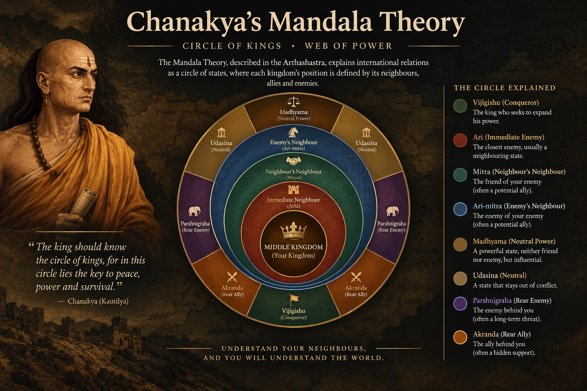

What is the Mandala theory?

The Mandala theory is Kautilya's framework for analyzing relations among neighboring states and understanding how a ruler should assess the wider political environment surrounding his kingdom. It is developed principally in Books 6 and 7 of the Arthashastra and describes interstate politics through the image of a mandala, or “circle” of states, organized around the ruler pursuing expansion and security, conventionally identified as the vijigishu or “would-be conqueror.” Geography is important because neighboring rulers may have directly competing territorial, political, and strategic interests, while a more distant ruler may sometimes have interests that conflict with the immediate neighbor and therefore align with the central ruler. Kautilya consequently treats interstate relations as dynamic rather than fixed: political relationships depend on relative strength, geographical position, interests, vulnerabilities, opportunities, and changing circumstances. The Mandala is therefore not simply a map of kingdoms but a strategic framework for evaluating how different powers relate to one another and how a ruler can use alliances, diplomacy, military force, and political calculation to advance the interests of his state.
The Mandala should not be reduced to the simplistic rule that every neighboring state is automatically an enemy and every distant state is automatically a friend. Kautilya identifies different political positions and relationships within the interstate circle, including the ari (enemy), mitra (ally), and other surrounding or intermediary powers whose interests and relationships can change. The framework must therefore be read together with Kautilya's broader treatment of diplomacy, alliances, war, peace, and the six measures of foreign policy (shadgunya), through which a ruler can choose different courses according to circumstances and relative power. The Mandala is also closely connected with Kautilya's analysis of state capacity: a ruler's ability to pursue an effective foreign policy depends partly on the condition of the state's own constituent elements. In this sense, it functions as the external counterpart to the Saptanga theory, which examines the internal elements and strength of an individual state, while the Mandala examines how that state operates within a competitive system of neighboring political powers.
For the wider historical background and discussion of Kautilya and the Arthashastra, see our main Chanakya guide.
The circle of states, step by step
| Term | Meaning |
|---|---|
| Vijigishu | The would-be conqueror, the king at the centre |
| Ari | The enemy or rival, typically the adjacent state |
| Mitra | The friend or ally, typically beyond the ari |
| Arimitra | The ally of the enemy |
| Mitramitra / Arimitramitra | The ally of the friend / the ally of the enemy's ally |
| Parshnigraha / Akranda | Rival and ally in the rear of the vijigishu |
| Madhyama | The “middle” king, bordering both vijigishu and ari and able to help or hinder either |
| Udasina | The “neutral” king, outside the circle and more powerful than the others |
In the standard reading there are twelve kings in the circle, with the four central types being the vijigishu, ari, madhyama and udasina.
The six-fold policy (Shadgunya)
The six-fold policy, or Shadgunya, is Kautilya's framework for choosing among different courses of action in foreign policy according to relative strength, circumstances, and strategic interests. Discussed in the Arthashastra in connection with the Mandala theory, these six measures are not presented as permanent rules that a ruler must always follow in the same way. Instead, they are strategic options that can be selected depending on the ruler's own capabilities, the strength and intentions of other states, geographical circumstances, and the opportunities or dangers created by changing political conditions. The six measures are Sandhi (making peace or entering into a treaty), Vigraha (hostility or waging war), Asana (remaining quiet or maintaining a position while waiting), Yana (marching, mobilizing, or preparing for military action), Samshraya (seeking protection or shelter under a stronger power), and Dvaidhibhava (following a dual policy, such as maintaining peace with one power while pursuing conflict against another). The framework therefore treats foreign policy as a matter of strategic choice rather than as a simple division between permanent peace and permanent war.
- Sandhi: making peace, concluding a treaty, or entering into an agreement when cooperation or temporary settlement is strategically advantageous.
- Vigraha: adopting hostility or going to war when conflict is judged more advantageous than maintaining peace.
- Asana: remaining quiet, holding one's position, or waiting rather than immediately committing to peace or military action.
- Yana: marching, mobilizing forces, or preparing for military action when circumstances make an advance strategically useful.
- Samshraya: seeking the protection or support of a stronger ruler or power when independent action would expose the state to excessive danger.
- Dvaidhibhava: pursuing a dual policy, such as making peace with one power while maintaining hostility or preparing for war against another.
The underlying principle is that the appropriate policy depends on relative power and changing circumstances rather than on a single universal rule. A weaker ruler may benefit from peace, negotiation, strategic patience, or seeking the protection of a stronger power, while a ruler with a significant advantage may have greater scope for military action. However, even a stronger ruler does not automatically have to choose war: Kautilya's analysis emphasizes calculation of costs, opportunities, alliances, timing, and the likely consequences of each course. The six-fold policy therefore complements the Mandala theory by providing practical categories through which a ruler can respond to different neighboring powers and changing balances of strength. It also reinforces the broader Kautilyan idea that successful foreign policy depends on assessing circumstances carefully rather than treating diplomatic relationships as fixed or purely moral choices.
The four means: sama, dana, bheda, danda
The four means, or upayas, are Kautilya's principal instruments for pursuing political objectives through persuasion, inducement, division, and coercion. The four are sama (conciliation or persuasion), dana (gifts, concessions, or material inducements), bheda (creating or exploiting divisions), and danda (coercion or force). They form part of Kautilya's broader theory of statecraft and can be used in dealing with rulers, officials, groups, allies, and opponents. They should not be understood simply as four fixed stages that a ruler must always follow in the same order. Their usefulness depends on the political objective, relative strength, the character and interests of the other party, and the risks and resources involved. The framework therefore emphasizes strategic selection of means: a ruler should choose the instrument most likely to produce the desired political result under the circumstances rather than treating one method as universally superior.
- Sama: conciliation, persuasion, negotiation, or the use of reasoned appeals to influence another party without immediately relying on material rewards or coercion.
- Dana: giving gifts, concessions, rewards, or other material benefits to encourage cooperation or influence another party's behavior.
- Bheda: creating, encouraging, or exploiting divisions among opponents by taking advantage of disagreements, rival interests, rivalries, or differences within an opposing group.
- Danda: coercion, punishment, or the use or threat of force to compel compliance when persuasion or other measures are insufficient or unsuitable.
The four upayas show that Kautilyan statecraft combines diplomacy, incentives, political intelligence, and coercive power rather than depending on military force alone. Sama may be useful when an agreement can be secured through persuasion; dana when concessions or rewards can change another party's calculation; bheda when divisions can weaken an opponent's capacity for coordinated action; and danda when coercion is considered necessary and practicable. The means can also be combined according to circumstances, and their effectiveness depends partly on the ruler's own resources and intelligence about the political environment. In this respect, the upayas complement the Shadgunya, or six-fold policy: the six measures describe broad courses of foreign policy such as peace, hostility, waiting, or seeking protection, while the four means describe important instruments through which political objectives can be pursued.
Is every neighbour an enemy?
No. Kautilya's Mandala theory treats a neighboring ruler as a potential or natural rival, but it does not claim that every neighbour is permanently an enemy. The basic reasoning is that adjacent states are more likely to have competing territorial, economic, and strategic interests, while a ruler located beyond an immediate rival may sometimes have an interest in supporting that rival's opponent. However, this is a starting point for analysing interstate relationships rather than an absolute rule that determines the behavior of every state. Kautilya's broader discussion of diplomacy, alliances, relative strength, and political strategy shows that relationships can change as circumstances change: a neighboring ruler may become an ally when interests converge, while a more distant ruler may become hostile when its interests conflict with those of the ruler being considered. The categories within the Mandala, such as ari (enemy) and mitra (ally), should therefore be understood in relation to political circumstances and strategic interests rather than as permanent labels attached to particular geographical positions. The Mandala is best understood as a flexible framework for assessing shifting patterns of rivalry, alliance, opportunity, and relative power, not as the simplistic claim that neighbours are always enemies and distant states are always friends.
Mandala theory in modern discussion
Modern scholars and commentators on international relations frequently compare Kautilya's Mandala theory with concepts such as balance-of-power politics, strategic competition, alliances, and political realism. It is also regularly discussed as part of the history of Indian political and strategic thought because of its systematic treatment of interstate relations, relative power, diplomacy, and changing political interests. At the same time, such comparisons require caution. The Arthashastra describes a world of ancient kingdoms, rulers, territorial expansion, warfare, and dynastic politics, and scholars continue to debate the text's date, layers of composition, and historical context. For this reason, the Mandala should not be treated as a direct blueprint for modern foreign policy or assumed to be identical to modern theories of international relations. Comparisons with realism or balance-of-power theory are best understood as analytical parallels that highlight similarities and differences between political ideas from different historical contexts. For a comparison with European political thought, see Chanakya vs Machiavelli.
Frequently asked questions
What is the mandala theory in simple terms?
It is Kautilya's model of foreign relations in which an ambitious king sits at the centre of a circle of states. His neighbour is a likely rival, and the state beyond the neighbour is a likely ally.
What does vijigishu mean?
Vijigishu means “one who desires conquest”. He is the king at the centre of the circle, from whose viewpoint the other states are classified.
Does the mandala theory say neighbours are always enemies?
No. The adjacent state is a natural rival, but policy depends on relative strength and changing circumstances.
What is the difference between mandala and Shadgunya?
The mandala maps the states around a king. Shadgunya is the set of six measures he chooses from when dealing with them.
Sources and further reading
- R. P. Kangle, The Kautilya Arthasastra, 3 parts (Bombay: University of Bombay, 1960–65): critical edition, translation, and study.
- Patrick Olivelle, King, Governance, and Law in Ancient India: Kautilya's Arthasastra (Oxford University Press, 2013).
- L. N. Rangarajan, Kautilya: The Arthashastra (Penguin Classics, 1992).
- Roger Boesche, The First Great Political Realist: Kautilya and His Arthashastra (Lexington Books, 2002).
- Thomas R. Trautmann, Kautilya and the Arthasastra (Leiden: Brill, 1971): a statistical study of the text's authorship.
Dating, authorship and translation choices for the Arthashastra are debated; see our editorial policy.
More on Chanakya
This page is one deep dive in our series on Chanakya. Start with the full overview: Chanakya (Kautilya): Life, Arthashastra & Political Thought →